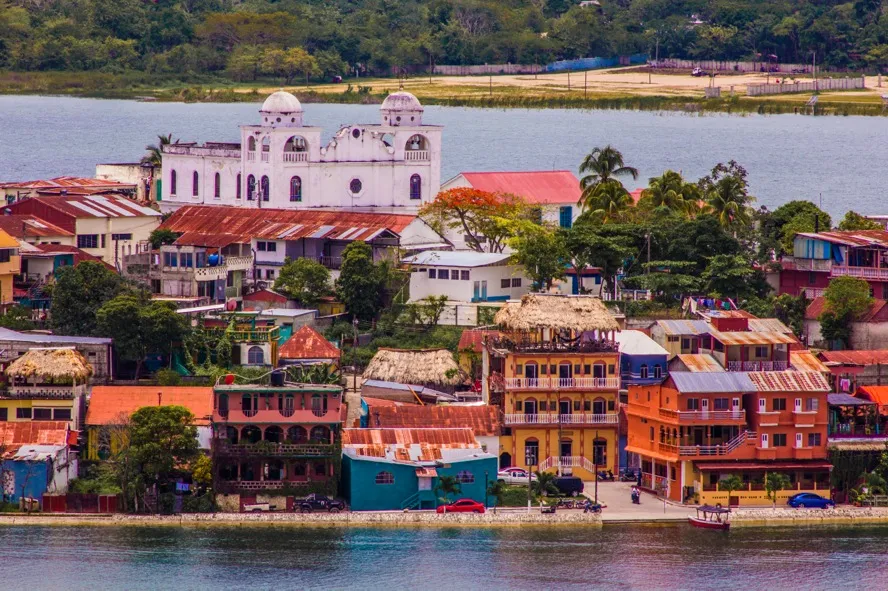

Bienvenido a Petén
Petén, situado en el norte de Guatemala, es un destino mágico que combina la riqueza cultural, histórica y natural de la región. Conocido por sus impresionantes paisajes, que abarcan selvas tropicales, lagos y ruinas mayas, Petén es el hogar de la antigua ciudad de Tikal, uno de los sitios arqueológicos más emblemáticos de la civilización maya. Además, su biodiversidad es excepcional, albergando una gran variedad de flora y fauna. Desde sus tradiciones culinarias, como el delicioso Pepián y el Ka'k'ik, hasta sus festividades vibrantes, Petén ofrece una experiencia única que invita a los visitantes a explorar y descubrir su herencia cultural y natural. ¡Adéntrate en Petén y descubre la maravilla que esta región tiene para ofrecer!Petén, la región más extensa de Guatemala, es un lugar de ensueño que destaca por su rica herencia cultural y su impresionante biodiversidad. Ubicada en el corazón de la selva tropical, esta región es famosa por ser el hogar de Tikal, uno de los sitios arqueológicos más importantes de la civilización maya y declarado Patrimonio de la Humanidad por la UNESCO. Las majestuosas pirámides y templos que emergen de la selva cuentan historias de una antigua cultura que floreció en armonía con la naturaleza. Más allá de su legado histórico, Petén ofrece una biodiversidad asombrosa. Los parques nacionales, como el Parque Nacional Tikal y el Parque Nacional Yaxhá, son refugios para una gran variedad de especies de flora y fauna, incluyendo jaguares, tucanes y muchas más. Los amantes de la naturaleza encontrarán aquí un paraíso lleno de aventuras al aire libre, desde caminatas por la selva hasta paseos en kayak por los lagos. La gastronomía petenera es otro tesoro que no te puedes perder. Platillos tradicionales como el Pepián, un guiso espeso, y el Ka'k'ik, una sopa de pavo llena de sabores, reflejan la fusión de influencias mayas y ladinas en la cocina local. Las tradiciones culinarias, junto con las festividades vibrantes y coloridas, invitan a los visitantes a sumergirse en la cultura viviente de Petén. Ya sea que busques explorar las maravillas arqueológicas, disfrutar de la naturaleza en su máxima expresión o experimentar la rica cultura local, Petén te espera con los brazos abiertos. ¡Descubre la magia de esta región única y déjate sorprender por su belleza y diversidad!

Lista de Municipios de Petén
- Flores – La capital del departamento, famosa por su isla en el lago Petén Itzá y su cercanía a Tikal.
- San Benito – Un municipio en pleno desarrollo con una importante infraestructura comercial y de servicios.
- San Andrés – Conocido por su naturaleza exuberante y su conexión con la Reserva de la Biosfera Maya.
- La Libertad – Un municipio lleno de historia arqueológica, con sitios mayas como La Blanca.
- San Francisco – Famoso por su entorno natural y por ser un importante punto de acceso al Parque Nacional Tikal.
- Santa Ana – Un pintoresco municipio que destaca por su tranquilidad y cercanía a la naturaleza.
- Melchor de Mencos – Municipio fronterizo con Belice, un punto clave para el comercio y el turismo.
- San José – Conocido por su pintoresco entorno en la orilla del lago Petén Itzá.
- San Luis – Famoso por su influencia cultural q'eqchi' y por su biodiversidad.
- Dolores – Municipio lleno de historia, cercano a sitios arqueológicos como El Mirador.
- Poptún – Municipio con paisajes impresionantes y acceso a cuevas y sitios arqueológicos.
- Sayaxché – Famoso por sus lagunas y sitios arqueológicos como Ceibal y Aguateca.
- San Luis – Una comunidad rodeada de bosques y patrimonio q'eqchi'.
- Las Cruces – Uno de los municipios más nuevos, fundado en 2011, con una creciente población y recursos naturales.